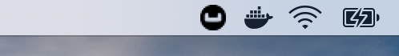
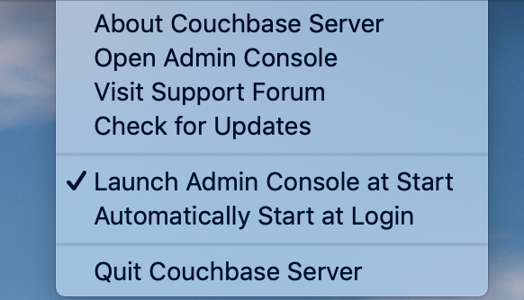

English | Español
Configurar un clúster de Couchbase CE
Aquí, usted podrá aprender cómo configurar un clúster Couchbase Server, cómo administrar la disponibilidad de los servicios y a replicar datos. Este tutorial se realizó con Couchbase Server CE, por lo que usted podrá utilizar esa distribución para seguir esta guía de forma gratuita.
Instalación
Para configurar un clúster, debe instalar Couchbase Server en varios nodos. En esta sección puede encontrar instrucciones sobre cómo hacerlo, siga las siguientes instrucciones para instalar 3 nodos. Más adelante nos referiremos a los nodos que instalará como: node-1, node-2 y node-3.
Esta guía ha sido probada en
Ubuntu 18.04,macOS MojaveyWindows 10.
Usted puede instalar el servidor en una máquina (bare metal) o usar una herramienta de containerization como Docker, para acelerar esta parte del tutorial.
Docker
Esta sería la forma más rápida y fácil de iniciar el servidor. Si usted necesita ayuda para instalar Docker, puede consultar las guías de instalación para múltiples sistemas operativos en su documentación oficial.
Después de que Docker se encuentre en funcionamiento, escriba el siguiente comando en su consola para iniciar el servidor.
docker run -itd --name couchbase-server -p 8091-8094:8091-8094 -p 11210:11210 couchbase:communityPara obtener una guía de instalación más detallada, puede revisar la descripcion de la imagen de Couchbase en el siguiente enlace: Dockerhub
Bare metal
Ubuntu 18.04
Primero, abra una consola e instale las siguientes herramientas, utilizadas por algunos de los paquetes principales de Couchbase Server.
sudo apt update
sudo apt install curl lsb-release gnupgDescargue e instale el meta-package .deb, el cual contiene la información necesaria para que apt recupere los paquetes necesarios de Couchbase y las llaves publicas.
curl -O https://packages.couchbase.com/releases/couchbase-release/couchbase-release-1.0-6-amd64.deb
sudo dpkg -i ./couchbase-release-1.0-6-amd64.debAhora usted está listo para instalar la última versión de Couchbase Server CE.
sudo apt update
sudo apt install couchbase-server-communityPara obtener una guía de instalación más detallada, puede seguir el siguiente enlace, Ubuntu 18.04
Windows 10
Descargue el instalador MSI desde el siguiente enlace.
Ejecútelo y siga el asistente.

Para obtener una guía de instalación más detallada, puede revisar la documentación de Couchbase en siguiente enlace, Windows 10
macOS
Descargue el fichero zip desde este link y ábralo posteriormente, este le enviará a la carpeta Descargas.
Abra la carpeta y arrastre la aplicación a su carpeta de Aplicaciones.
Haga doble click en la aplicación Couchbase Server para iniciar el servidor.
Ahora, usted puede usar el ícono de navegción en la esquina derecha de su escritorio para administrar su servidor.
 
Para obtener una guía de instalación más detallada, puede seguir la documentación de Couchbase para macOS.
Aprovisionamiento
El aprovisionamiento establece las credenciales de administrador para el servidor y especifica los servicios activos y sus cuotas de memoria. Al aprovisionar un nodo, las opciones son crear un nuevo clúster o unirse a uno existente. Puede aprovisionar un nodo a través de CLI, REST API o Web UI.
El primero nodo
La forma más fácil es con la ayuda de la Web UI, por lo que usted deberá abrir su navegador y acceder al puerto 8091 del node-1. Usted debería observar algo como lo que se muestra a continuación.
Dado que este será el primer nodo de nuestro grupo de 3, haga click en Setup New Cluster. Elija un nombre de servidor y un administrador con una contraseña, estas credenciales deben guardarse para su uso posterior.
El siguiente paso es configurar algunos de los aspectos de su clúster, como los servicios disponibles, la utilización de la memoria y la ruta de almacenamiento para los datos e índices. Haga click en el botón Configure Disk, Memory, Services.
Las rutas de almacenamiento y las cuotas de memoria predeterminadas deberían ser suficientes para un clúster de prueba. Si desea obtener más información sobre los servicios y cómo ajustar adecuadamente su servidor, siga el siguiente enlace.
Resumiendo:
-
Data: admite el almacenamiento, la configuración y la recuperación de los elementos de datos especificados por llaves.
-
Query: analiza consultas especificadas en el lenguaje de consulta
N1QL, ejecuta las consultas y devuelve el resultado. El servicio de consulta interactúa con los servicios de datos e índices. -
Index: crea índices, para el uso de los servicios de consulta.
-
Search: crea índices especialmente diseñados para la búsqueda de un texto completo. Esto admite búsquedas con reconocimiento de idioma; permitiendo a los usuarios buscar, por ejemplo, la palabra bellezas, y además obtener resultados de bella y bellísimo.
Insertar datos
En este momento, usted tiene un clúster de un nodo funcionando, vamos a agregar algunos datos antes de adicionar más nodos. Si observa con atención, hay una nota que le indica que agregue un bucket de muestra. Haga click en dicho mensaje y elija cualquiera de las opciones, verá una notificación para la tarea. Cuando termine, puede explorar sus nuevos datos de muestra en la pestaña Buckets.
En la pestaña Servers, usted puede encontrar una lista de sus nodos y la cantidad de datos almacenados actualmente en ellos. Si mira más de cerca, también hay una advertencia que le indica que necesita al menos un nodo más para poder replicar sus datos.
Adicionar otro nodo
Abra su navegador nuevamente, esta vez abra la Web UI del node-2 y presione Join Existing Cluster. Ingrese la dirección IP del node-1 y las credenciales del clúster. En la parte inferior, presione la flecha para configurar algunos aspectos de este nodo. Probablemente pueda notar que hay menos opciones que las disponibles para node-1, eso es porque formará parte de un clúster creado previamente, por lo que la mayoría de las configuraciones serán importadas.
En la pestaña Dashboard podrá encontrar información sobre su clúster. Para obtener una vista más detallada, vaya a la pestaña Server.
En este momento, el nuevo nodo todavía está esperando una operación de rebalanceo para comenzar a servir los datos o mantener las réplicas. Para forzar manualmente dicha operación, presione el botón Rebalance.
Eso puede tomar un tiempo, así que tenga paciencia, cuando termine, cada documento y su réplica se distribuirán entre los nodos. Como indicador, debajo de la columna ítems, hay información sobre cuántos documentos/réplicas se almacena actualmente en cada nodo.
Unir el último nodo
Se puede agregar fácilmente otro nodo o más siguiendo los pasos de la sección anterior tantas veces como sea necesario. Acceda a la Web UI del node-3, y siga los pasos nuevamente.
Con cada nodo agregado, los documentos y sus réplicas se dispersaran más entre el clúster. Lo cual es bastante bueno, puesto que podrá acceder todos sus datos desde cualquier nodo y las réplicas estarán disponibles si algún nodo falla o se elimina.
El número de réplicas por documento se puede cambiar para cualquier bucket, aumentar ese factor hará que su clúster sea más seguro contra fallas a cambio de espacio en disco. Para cambiar el nivel de réplica, haga click en el bucket en la pestaña Buckets, y luego presione el botón Edit. El valor deseado se encuentra en Advanced bucket settings.
Eliminar un nodo
Los nodos de Couchbase Server se pueden eliminar o agregar indistintamente, no hay nodos especiales con servicios o procesos que no se puedan reemplazar en tiempo de ejecución. Probemos esto eliminando el primer nodo que aprovisionamos.
Después de una operación de rebalanceo, su clúster eliminará todos los documentos y réplicas del node-1 y formará nuevamente un clúster de 2 nodos conservando todos los datos.
Próximos pasos
Le recomendamos que siga nuestros próximos tutoriales, para encontrar la lista completa diríjase a Home.
Además, puede revisar Couchbase Documentation para obtener más información sobre otros temas.